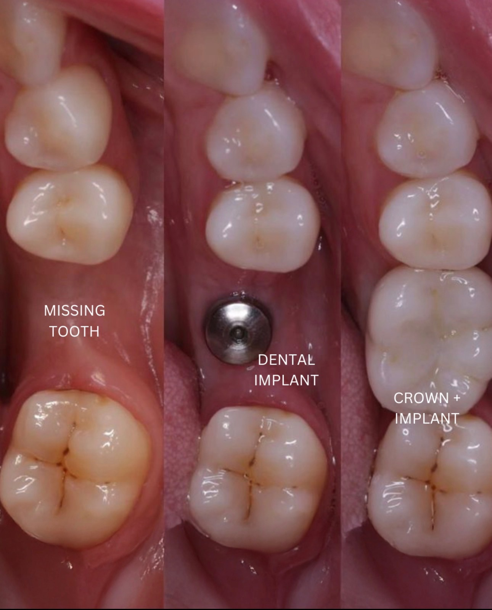

A whole new smile —
in as little as a day.
For patients missing most or all of their teeth, All-on-4 implants and hybrid dentures replace an entire arch with a permanent, natural-looking set of teeth — anchored to just a few implants, no messy adhesives, no removable plate.
Full-arch restoration.
Drag to compare.
An actual Clear Dental patient — from failing, broken teeth to a complete, confident smile.

One solution,
two names.
All-on-4 uses just four (sometimes more) precisely placed implants to support a full, fixed arch of teeth. Because the implants are angled to use your strongest available bone, most patients avoid bone grafting — and many leave with a temporary set of teeth the same day.
A hybrid denture is the permanent prosthesis that attaches to those implants — a fixed bridge that looks and functions like natural teeth. Unlike a traditional denture, it's screwed firmly in place. It never slips, never comes out at night, and you care for it much like your own teeth.
- A permanent, fixed full arch — not a removable plate
- Often just 4–6 implants per arch
- Frequently no bone graft needed
- Same-day temporary teeth in many cases
- Eat, smile, and speak with full confidence
Real patients.
Life-changing results.
Every case below is an actual Clear Dental patient, shown with permission. Drag any slider to compare.
Full Upper Arch
All-on-4Worn & Stained Teeth
Hybrid RestorationSpacing & Wear
Full-Arch HybridMissing & Failing Teeth
All-on-4From consult
to a brand-new smile.
3D Planning
A 3D scan maps your bone and nerves so we can plan implant placement with total precision.
Implant Placement
We remove any failing teeth and place the implants — comfortably, with sedation options available.
Same-Day Teeth
In many cases you leave the same day with a fixed temporary arch — never without teeth.
Final Hybrid
After healing, we place your final hybrid prosthesis — custom-crafted to look completely natural.